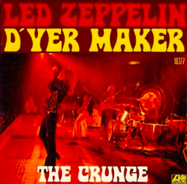
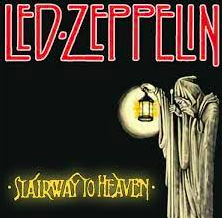

| INTERESTING FACTS |
|

|
- D'yer Maker
- The title is pronounced "Jamaica," as spoken by the locals in that country. It is a play on the phrase "did you make her"
- Led Zeppelin never performed this live. It would have been difficult to re-create the reggae band.
- This is one of the few Zeppelin songs where all four members share composer credit.
|
- Stairway to heaven
- Robert Plant, admirer of J.R.R. Tolkien's classic Trilogy The Lord Of The Rigns, shows inspiration from them by writing in lyrics sparked from the tales; "In my thoughts I have seen rings of smoke through the trees,"could be a reference to the smoke rings blown by the wizard Gandalf.
|

|
|
|
- These guys are an awesome band
- if you have not heard their music, DO IT
- LED ZEPPLIN IS ONE OF THE GREATEST ROCK BANDS EVER
|